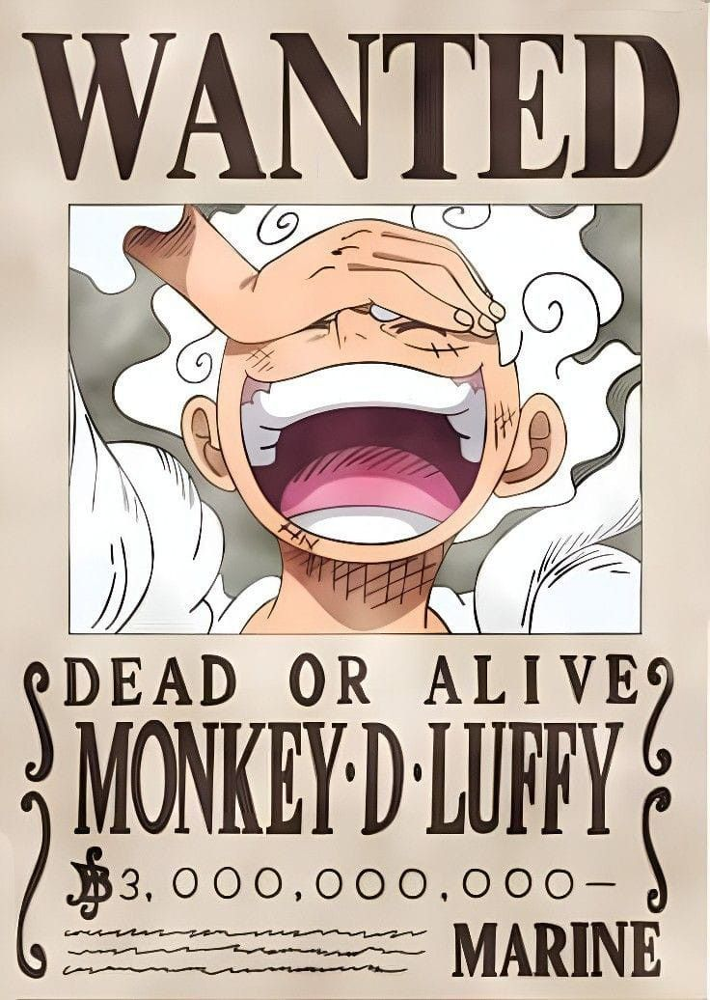
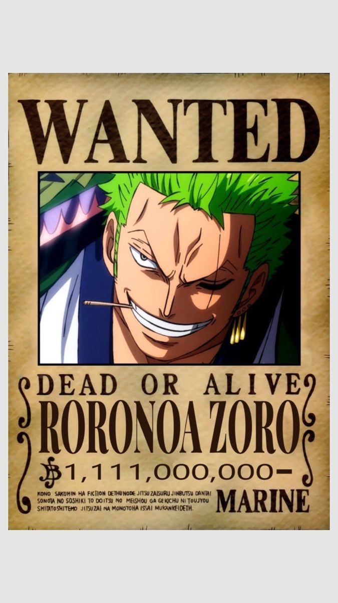
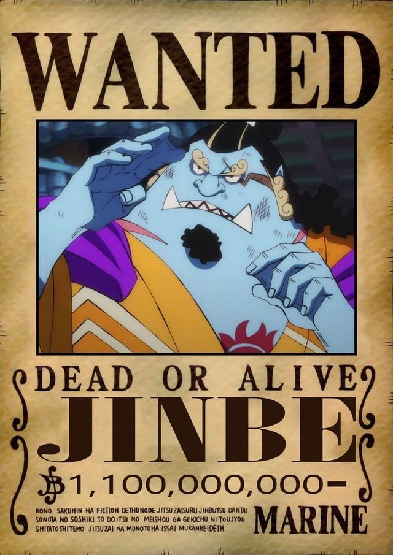
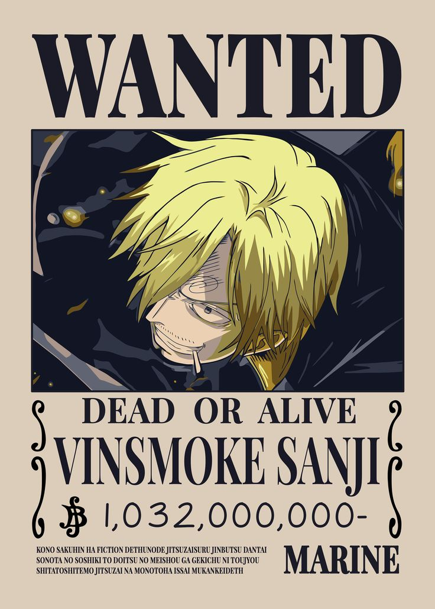
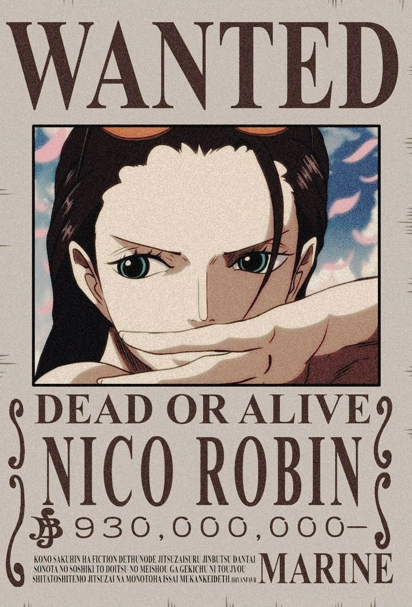
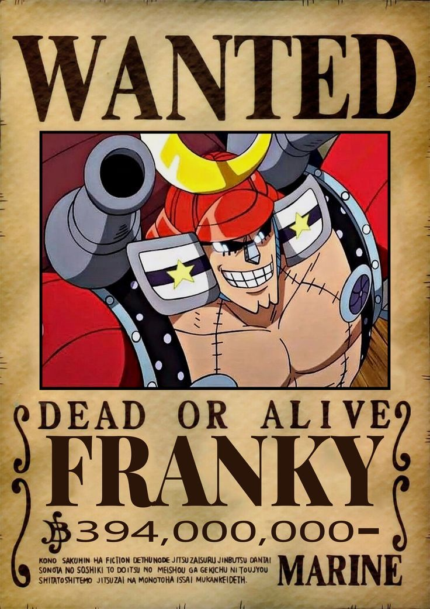
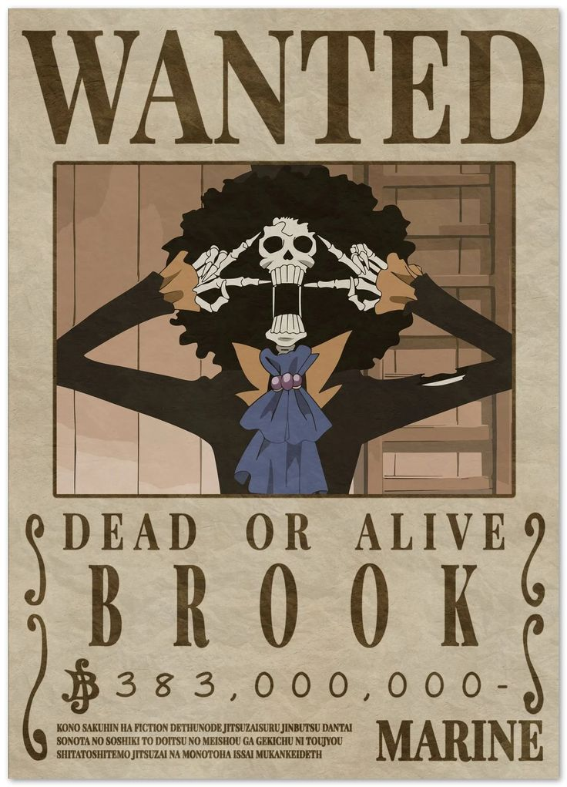
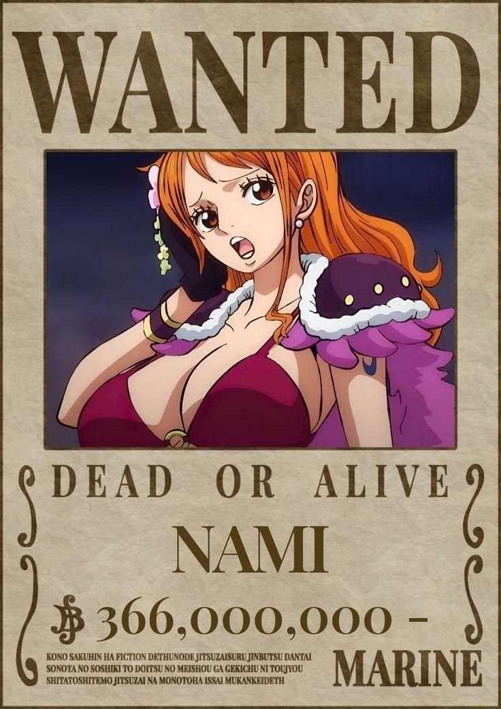
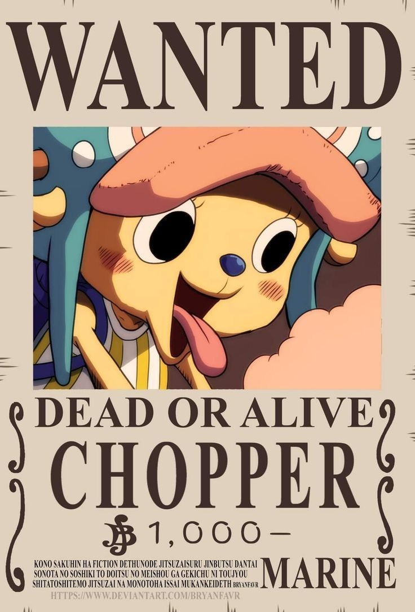

Monkey D. Luffy
Kapten
Pemilik topi jerami dari Shanks. Bertekad menjadi Raja Bajak Laut. Kekuatan buah iblis Gomu-Gomu menjadikannya petarung luar biasa. Kepribadiannya lugu namun jiwa kepemimpinannya tak tertandingi.
⚓ The Grand Line Awaits
Sembilan bajak laut. Satu tujuan. Satu harta karun yang mengubah
dunia.
Perjalanan epik Monkey D. Luffy dan Kru Mugiwara menuju
One Piece.
Dunia One Piece
One Piece adalah manga dan anime karya Eiichiro Oda yang pertama kali terbit pada 1997. Kisahnya berlatar di dunia lautan luas bernama Grand Line, sebuah jalur lautan berbahaya yang menjadi panggung para bajak laut legendaris. Di sinilah harta karun terbesar dunia, One Piece, disembunyikan oleh Raja Bajak Laut terakhir, Gol D. Roger.
Monkey D. Luffy, seorang pemuda bertopi jerami dari desa Foosha, bermimpi menjadi Raja Bajak Laut. Dengan kemampuan buah iblis Gomu Gomu no Mi yang mengubah tubuhnya menjadi karet, Luffy memulai petualangan mengarungi lautan — mengumpulkan teman-teman setia, menghadapi musuh maha kuat, dan menantang tatanan dunia yang korup.
"Aku tidak akan menjadi Raja Bajak Laut terkuat di lautan. Aku hanya ingin menjadi yang paling bebas."— Monkey D. Luffy
One Piece bukan sekadar kisah bajak laut. Ini adalah cerita tentang persahabatan, kebebasan, dan keberanian mempertahankan mimpi di tengah badai. Setiap anggota kru Mugiwara membawa luka dan impian tersendiri — dan bersama-sama, mereka menjadi keluarga yang tak terpisahkan.
Straw Hat Pirates
Kapten
Pemilik topi jerami dari Shanks. Bertekad menjadi Raja Bajak Laut. Kekuatan buah iblis Gomu-Gomu menjadikannya petarung luar biasa. Kepribadiannya lugu namun jiwa kepemimpinannya tak tertandingi.
Ahli Pedang / Wakil Kapten
Pendekar tiga pedang yang bermimpi menjadi pedang terkuat di dunia. Mantan bounty hunter yang bergabung sejak awal petualangan Luffy. Loyalitas dan disiplinnya menjadi tulang punggung kru.
Navigator
Navigator jenius yang bermimpi memetakan seluruh samudra. Mahir membaca cuaca dan menggunakan clima-tact sebagai senjata. Masa lalunya yang pahit memperkuat tekadnya untuk berlayar bebas.
Sniper / Mekanik
Penembak jitu dengan imajinasi liar dan keberanian yang tumbuh perlahan. Selalu bermimpi menjadi pahlawan pemberani. Ahli membuat alat dan senjata kreatif di kapal.
Juru Masak
Koki terbaik yang memiliki prinsip tidak pernah menyakiti wanita. Bertarung hanya dengan kaki — teknik "Black Leg Style"-nya mematikan. Bermimpi menemukan All Blue, lautan legendaris tempat semua ikan berkumpul.
Dokter
Rusa kutub yang memakan buah iblis Hito Hito no Mi sehingga bisa berbicara dan berubah wujud. Dokter kru yang ingin menyembuhkan semua penyakit di dunia. Polosnya membuat dia jadi maskot kru.
Arkeolog
Satu-satunya arkeolog yang bisa membaca Poneglyph — batu bersejarah yang menyimpan sejarah dunia yang tersembunyi. Buah Hana-Hana memungkinkannya menumbuhkan anggota tubuh di mana saja.
Tukang Kapal
Mantan bajak laut yang memodifikasi tubuhnya menjadi cyborg dengan berbagai senjata. Pembangun kapal Thousand Sunny yang legendaris. Impiannya adalah mengarungi seluruh dunia dengan kapal buatannya sendiri.
Musisi
Kerangka hidup yang dimungkinkan oleh buah Yomi-Yomi no Mi. Musisi jiwa bebas yang menghangatkan suasana kru dengan musiknya. Sudah berkelana sendirian selama 50 tahun sebelum bertemu Luffy.
Saga & Arc
Luffy memulai perjalanan dari Desa Foosha, mengumpulkan Zoro, Nami, Usopp, dan Sanji. Kemenangan besar pertama: mengalahkan bajak laut ikan-manusia Arlong yang telah menindas kampung halaman Nami selama bertahun-tahun.
Kru tiba di Grand Line dan berpetualang di gurun Alabasta. Mereka mengalahkan Crocodile, salah satu anggota Shichibukai, menyelamatkan kerajaan dari kehancuran, dan Nico Robin bergabung dengan kru.
Kru menemukan jalan ke pulau di atas awan, Skypiea. Di sini mereka menghadapi Enel, dewa yang mengaku berkuasa atas seluruh langit. Kemenangan ini membawa mereka pada misteri Poneglyph pertama.
Salah satu momen paling emosional: Luffy menyatakan perang pada Pemerintah Dunia demi menyelamatkan Robin. Di sinilah Robin mengucapkan kalimat bersejarah — "Aku ingin ikut bersama kalian!"
Perang terbesar dalam sejarah One Piece. Luffy bertarung sendirian di jantung markas Marine demi menyelamatkan saudara angkatnya, Portgas D. Ace. Tragedi ini mengubah Luffy dan dunia selamanya — dan memaksanya tumbuh lebih kuat.
Di negeri samurai Wano yang terisolasi, Luffy memimpin aliansi besar melawan Kaido — salah satu Yonko (Kaisar Laut) terkuat. Kemenangan di Wano membawa Luffy selangkah lebih dekat menuju tahta Raja Bajak Laut.

Setelah mengalahkan Kaido dalam perang Wano dan membangkitkan kekuatan Gear 5, Luffy diakui sebagai salah satu Yonko baru.

Mengalahkan King, komandan terkuat Bajak Laut Beast, dalam pertempuran besar di Onigashima selama perang Wano.

Mengalahkan Who's Who dari kelompok Tobiroppo dalam perang Onigashima menggunakan teknik karate manusia ikan.

Mengalahkan Queen dari Beast Pirates setelah membangkitkan kekuatan genetika Germa dan teknik Ifrit Jambe.

Mengalahkan Black Maria dengan teknik Demonio Fleur dalam perang Onigashima.

Tetap dikenal sebagai God Usopp setelah kontribusinya dalam kekacauan perang besar melawan Beast Pirates.

Mengalahkan Sasaki dari Tobiroppo menggunakan kekuatan robot General Franky.

Membantu Nico Robin melawan Black Maria dan menunjukkan kekuatan pedang serta kemampuan roh.

Mengalahkan Ulti dengan bantuan Zeus yang kini menjadi bagian dari Clima-Tact miliknya.

Mengembangkan obat untuk virus Ice Oni milik Queen dan membantu menyelamatkan banyak orang selama perang Wano.